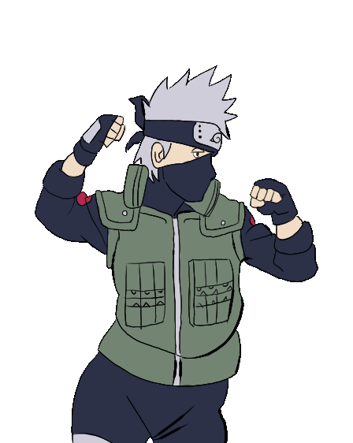

Now this is a story all about how my life got flipped turned upside down:
from being one of those "gifted/honor" students who did everything their immigrant parents told them to growing up....
To changing careeers after 2 years because the American Education System is a joke (LOL jk, kinda).
I want to become a web developer because it's exciting to be a part of a field where you're getting paid to learn more!!! it's LIT!
Here's a little about myself. So please,
pull up a chair,
grab a Large Oolong Milk tea with FULL sugar, herbal jelly, no ice,
and enjoy the ride.
These events occurred in this EXACT(probably) order:
Halloween is THE best Holiday.
Next to National Lost Sock Memorial Day of course.
(May 9th if you did not know, smh)
The spookiness is exciting and being scared is a huge adrenaline rush.
Have I cried at the "Haunted House" attraction/walk-throughs? 100% Yes, I've even cried in line and will happily do it all over again.
Below is a photograph from Halloween from a few years ago, as you can see there is a member of the Akatsuki, a Chef, Son Goku, and a Ninja from the Villiage of the Hidden Leaf.
In the middle is me, a clown. But I am more like the entire circus.
